Every game word you need, in order of how much you'll use it.
The board
Word
What it means
Active Spot
The one Pokémon out front. It's the only one that can attack, and it's the only one that can be attacked.
Bench
Your other Pokémon, waiting behind. You can have up to 5. They're safe from most attacks, but they can't attack either.
Hand
The cards you're holding.
Deck
Your face-down pile you draw from.
Discard pile
Where used and knocked-out cards go. Not gone forever — some cards fish things back out.
Prize cards
6 cards you set aside at the start. Every time you knock out a Pokémon, you take one — or two, if it was an ex. Take all 6 and you win.
Pokémon
Word
What it means
Basic
A Pokémon you can play straight from your hand onto the Bench. Eevee, Eevee ex, and Hoothoot are your Basics.
Stage 1
Evolves from a Basic. You put it on top of the Basic. Flareon ex and Noctowl are Stage 1.
Stage 2
Evolves from a Stage 1. This deck has none. That's on purpose.
Evolve
Put an evolution card on top of the Pokémon it grows from. It keeps its Energy and its damage. You can't evolve a Pokémon the same turn you played it — unless a card says you can.
HP
How much damage a Pokémon can take before it's knocked out.
Damage counter
A little marker worth 10 damage. So 3 damage counters = 30 damage.
Knocked Out (KO)
When damage reaches a Pokémon's HP, it goes to the discard pile and your opponent takes a Prize card.
Weakness
If a Pokémon is Weak to a type, attacks of that type do double damage to it. Your Flareon ex is Weak to Water ×2. Your dad has no Water cards, so it never comes up against him.
Resistance
The opposite — that type does less damage. Your Hoothoot and Noctowl both Resist Fighting −30.
Retreat cost
How much Energy you discard to move your Active Pokémon back to the Bench. Flareon ex's is 2.
Ability
Free text on a Pokémon that just works. It is not an attack. Using an Ability does not end your turn.
Energy and attacks
Word
What it means
Energy
Cards you attach to Pokémon so they can attack. You may attach only 1 Energy per turn from your hand. Cards can attach more — this deck has a lot of those.
[R]
A Fire Energy symbol. Only a Fire Energy pays for it.
[W]
A Water Energy symbol. Only a Water Energy pays for it.
[L]
A Lightning Energy symbol. You have none of these. See Basic Water Energy for why that matters.
[C]
A Colorless symbol. Any Energy pays for it.
Attack cost
The symbols next to an attack. You need that much Energy attached to use it.
Attacking ends your turn.
Do everything else first. Once you attack, your turn is over.
Trainer cards
Word
What it means
Trainer
Any card that isn't a Pokémon or an Energy. There are four kinds:
Supporter
Only 1 per turn. These are the powerful ones. Choosing which one is your biggest decision each turn.
Item
Play as many as you want in a turn.
Stadium
Stays on the table and changes the rules for both players. Only one Stadium can be out at a time. You have none. Your dad has Risky Ruins, so his always stays.
Pokémon Tool
Attaches to a Pokémon and stays there. You have exactly one: Sparkling Crystal.
Rules that trip people up
Word
What it means
Mulligan
If your first 7 cards have no Basic Pokémon, show your hand, shuffle it back, and draw 7 again. Your opponent draws 1 extra card. It's not a loss — just a do-over.
Going first
Whoever goes first cannot attack on their first turn. Use that turn to set up instead.
Confused
A Special Condition. When a Confused Pokémon tries to attack, flip a coin. Tails = the attack does nothing, that Pokémon takes 30 damage, and the turn ends. It only wears off when the Pokémon leaves the Active Spot. Your dad's deck does this constantly.
Special Condition
Confused, Asleep, Paralyzed, Poisoned, or Burned. They all go away when the Pokémon leaves the Active Spot.
4-copy limit
You may have at most 4 cards with the same name in a deck. Basic Energy is the one exception — you can have as many as you want.
New words for this deck
These five are the ones that make this deck different. Learn these.
Word
What it means
ex
A really strong Pokémon. The catch: it's worth 2 Prize cards when it gets knocked out, not 1. "ex" is part of the card's name, so Eevee and Eevee ex count as different cards for the 4-copy limit.
Rule Box
The grey box of extra rules at the bottom of an ex card. Flareon ex and Eevee ex have one. Everything else in your deck doesn't.Gwynn cares about this.
Tera
An Ability on bothFlareon ex and Eevee ex. While that Pokémon is on your Bench, attacks do zero damage to it. Not less damage. Zero. This Ability is the reason the deck works.
ACE SPEC
A card so strong you may only have one in your whole deck — one total, not one of each. Yours is Sparkling Crystal.
Search your deck
Look through your whole deck and take out the exact card you want. Then shuffle. Half this deck does this. It's why you almost never get stuck.
Deck List
x4x2x3x4x3x4
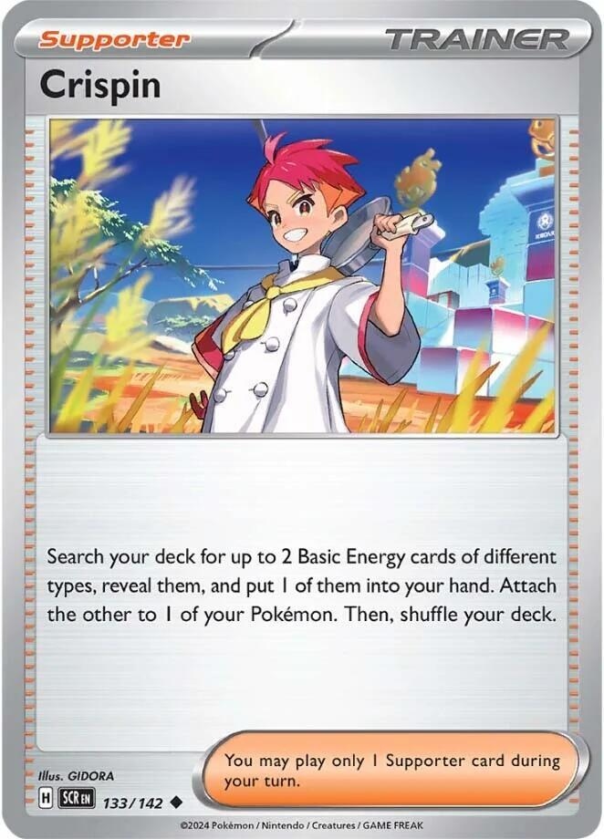
x4x3
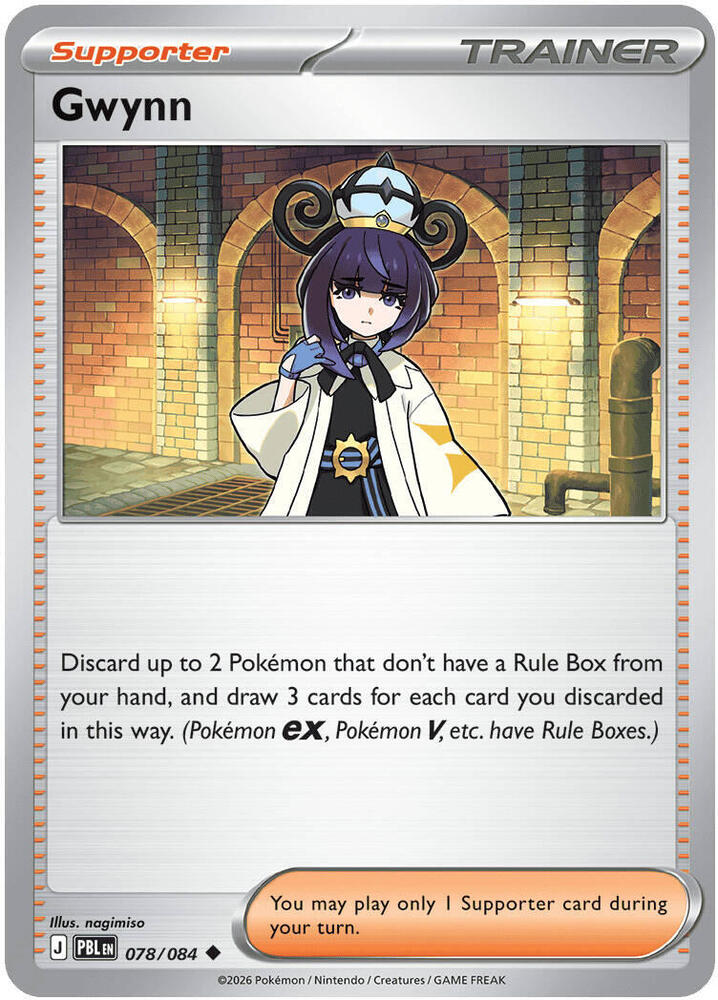
x2x2x4x4x3x3
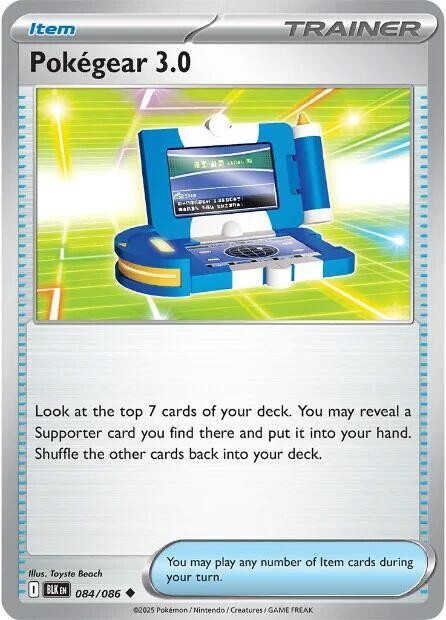
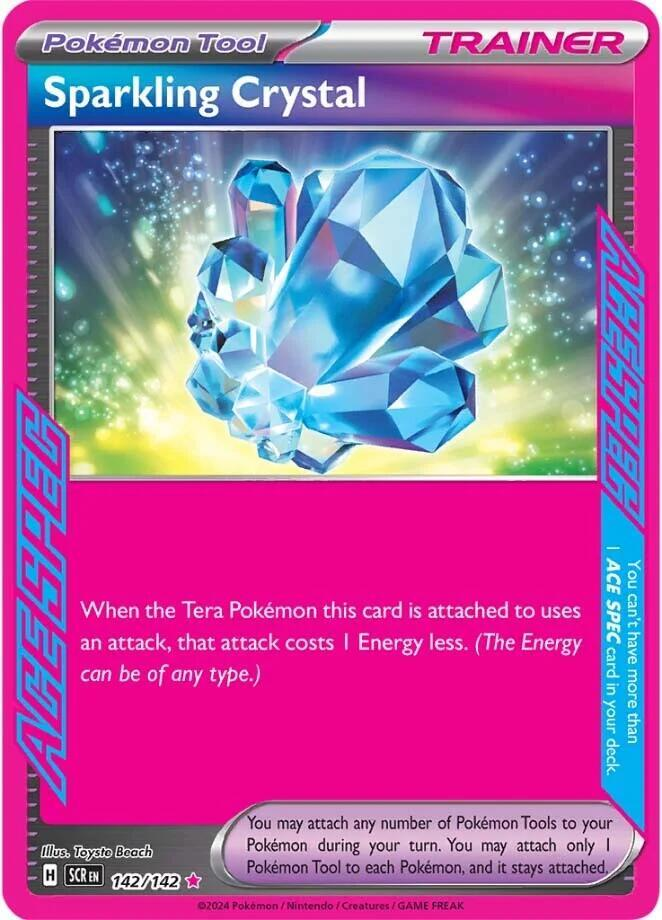
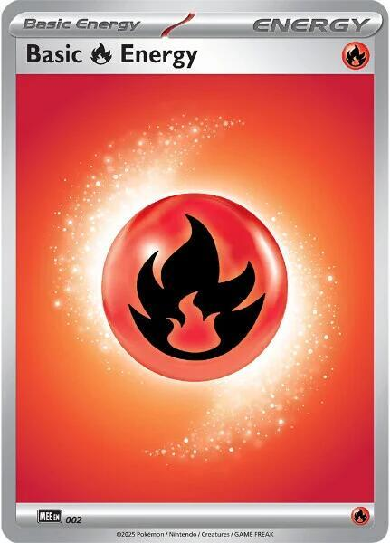
x10
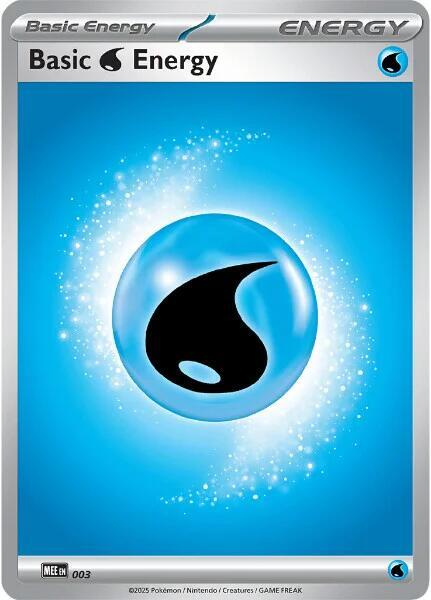
x3
Pokémon
Eeveex4
Set
SV: Prismatic Evolutions
Number
074/131
Type
Colorless
HP
50
Stage
Basic
Weakness
Fighting ×2
Retreat
1
Ability
Boosted Evolution — as long as this Pokémon is in the Active Spot, it can evolve during your first turn or the turn you play it.
Attack 1
Reckless Charge[C][C] 30 — this Pokémon also does 10 damage to itself.
Evolution
eevee → flareon ex
General use
Eevee is the fast start, and Boosted Evolution is the whole reason.
Normally you play a Basic, wait a turn, then evolve it. Eevee doesn't wait. Play it into the Active Spot and you can put Flareon ex on top of it the same turn — even on turn one.
That's a 270 HP attacker on the board before your dad has done anything.
Pairing
Flareon ex — the only thing you want Eevee to become.
Buddy-Buddy Poffin — fetches two Eevee out of your deck for free. They land on the Bench though, so read the Strategy below.
Night Stretcher — pulls a knocked-out Eevee back out of the discard pile.
Strategy
The trap is the Bench.Boosted Evolution says Active Spot, and it means it. An Eevee sitting on your Bench is a normal Eevee: you have to wait a full turn to evolve it.
So the Eevee you're going to evolve right now has to come from your hand, into the Active Spot.Buddy-Buddy Poffin puts Pokémon on the Bench, so Poffin is for your spare Eevee and your Hoothoot, not for the one you want to grow immediately.
50 HP is nothing. Almost anything your dad plays knocks out an Eevee. That's fine — you're not planning to leave it there. You play it, you evolve it, and by the time he gets a turn it's a Flareon ex.
Don't attack with it.Reckless Charge does 30 and hurts itself for 10. On a 50 HP Pokémon that's a third of its life for almost no damage. If you're attacking with Eevee, something went wrong three turns ago.
Eevee exx2
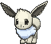
Set
SV: Prismatic Evolutions
Number
075/131
Type
Colorless
HP
200
Stage
Basic
Weakness
Fighting ×2
Retreat
1
Prizes given up
2
Ability 1
Rainbow DNA — this Pokémon can evolve into any Pokémon ex that evolves from Eevee if you play it from your hand onto this Pokémon.
Ability 2
Tera — as long as this Pokémon is on your Bench, prevent all damage done to this Pokémon by attacks (both yours and your opponent's).
Attack 1
Coruscating Quartz[R][W][L] 200
Evolution
eevee ex → flareon ex
General use
Eevee ex is the tough version of Eevee. 200 HP instead of 50.
It does not have Boosted Evolution, so it can't evolve the turn you play it. What it gives you instead is a body your dad genuinely struggles to remove. His best attack does 170.
It also has Tera, the same Ability as Flareon ex. On your Bench, attacks do zero damage to it. So an Eevee ex you're saving for later cannot be picked off while it waits.
Use plain Eevee when you want speed. Use Eevee ex when you have a turn to spare and you'd rather not lose anything.
Ultra Ball — the only reliable way to find it. It's too big for Buddy-Buddy Poffin.
Switch — retreat cost 1 is cheap, but Switch is free.
Sparkling Crystal — Eevee ex is a Tera Pokémon, so the Tool is allowed to go on it.
Strategy
It is worth 2 Prize cards. A 200 HP Pokémon feels safe, and then your dad chips it down over three turns and takes a third of the game for it. Big is not the same as safe when the prize is doubled.
Buddy-Buddy Poffin cannot find it. Poffin only fetches Basics with 70 HP or less. Eevee ex has 200. Ultra Ball is your search card for this one.
Flareon exx3
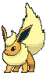
Set
SV: Prismatic Evolutions
Number
014/131
Type
Fire
HP
270
Stage
Stage 1 (from Eevee)
Weakness
Water ×2
Retreat
2
Prizes given up
2
Ability
Tera — as long as this Pokémon is on your Bench, prevent all damage done to this Pokémon by attacks (both yours and your opponent's).
Attack 1
Burning Charge[R][C] 130 — search your deck for up to 2 Basic Energy cards and attach them to 1 of your Pokémon.
Attack 2
Carnelian[R][W][L] 280 — during your next turn, this Pokémon can't attack.
Evolution
eevee → flareon ex
General use
This is the whole deck. Everything else exists to get a Flareon ex out and keep it attacking.
Burning Charge is the card. It does 130 damage — and then it goes and finds two more Energy out of your deck and attaches them anywhere you like. You attack and you build up at the same time, every single turn.
130 is an exact number against your dad. His Gengar has 130 HP. His Weezing has 130 HP. Burning Charge knocks out either one in one hit, with no Leon, no set-up, and no coin flips.
Sparkling Crystal — makes Burning Charge cost one Energy instead of two.
Crispin — hands you the Fire Energy to start the engine.
Switch — pulls a hurt Flareon ex back to the Bench, where Tera makes it untouchable.
Noctowl — its Ability only works if you have a Tera Pokémon in play. Flareon ex and Eevee ex both count.
Strategy
Tera is the best Ability in the deck, and it only works on the Bench. While a Flareon ex is benched, attacks do zero damage to it. Not reduced. Zero.
Think about what that means against your dad. His Gengar's Mind Jack can't touch it. His Weezing's Crazy Blast can't touch it. The only Pokémon he can attack is whichever one is in your Active Spot.
So the pattern is: build on the Bench, step forward, hit, step back. Attack with one Flareon ex, and when it gets low, Switch it to the Bench and bring up a fresh one. The hurt one is now completely safe.
Free Energy every turn adds up fast.Burning Charge attaches 2 Energy on top of the 1 you attach by hand. That's 3 Energy a turn while you're also doing 130 damage. Put them on the Flareon ex sitting on your Bench, so your next attacker is already loaded before it ever steps out.
Hoothootx4
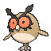
Set
SV07: Stellar Crown
Number
114/142
Type
Colorless
HP
70
Stage
Basic
Weakness
Lightning ×2
Resistance
Fighting −30
Retreat
1
Attack 1
Triple Stab[C] 10× — flip 3 coins. This attack does 10 damage for each heads.
Evolution
hoothoot → noctowl
General use
Hoothoot has one job: be a Hoothoot so it can become a Noctowl. That's it. It never attacks and it never wins you a game by itself.
You have 4 because Noctowl's Ability is the best draw engine in the deck, and you can't have a Noctowl without a Hoothoot underneath it first.
Pairing
Noctowl — the only reason Hoothoot is in the deck.
Buddy-Buddy Poffin — 70 HP exactly, so Poffin can fetch it. That's not a coincidence.
Gwynn — Hoothoot has no Rule Box, so a spare one is perfect Gwynn fuel.
Strategy
Bench them early and bench more than one. Every Hoothoot on your Bench is a Noctowl you can evolve later, and each evolution is two free Trainer cards. Holding Hoothoot back in your hand is holding back your own draw engine.
70 HP is the magic number for Buddy-Buddy Poffin. Poffin fetches Basics with 70 HP or less, and Hoothoot is exactly 70. So one Poffin can grab an Eevee and a Hoothoot in one go, for free, without using your Supporter.
Don't attack with it.Triple Stab flips 3 coins for 10 each. On average that's 15 damage. Your dad's smallest Pokémon has 60 HP.
Noctowlx3
Set
SV07: Stellar Crown
Number
115/142
Type
Colorless
HP
100
Stage
Stage 1 (from Hoothoot)
Weakness
Lightning ×2
Resistance
Fighting −30
Retreat
1
Ability
Jewel Seeker — once during your turn, when you play this Pokémon from your hand to evolve 1 of your Pokémon, if you have any Tera Pokémon in play, search your deck for up to 2 Trainer cards and put them into your hand.
Attack 1
Speed Wing[C][C] 60
Evolution
hoothoot → noctowl
General use
Noctowl is your draw engine, and it doesn't work like a normal one.
Most draw cards give you random cards. Jewel Seeker lets you pick the exact two Trainers you want out of your whole deck. Need a Boss's Orders to finish the game? Go get it. Need a Switch to escape? Go get it.
The catch is in the wording: it only fires the moment you evolve a Hoothoot into it, and only if you have a Tera Pokémon in play. Both Flareon ex and Eevee ex are Tera, so that part is almost always true.
Pairing
Flareon ex — a Tera Pokémon, which is what switches Jewel Seeker on.
Eevee ex — also Tera, so it turns Jewel Seeker on too. Even a benched one counts.
Boss's Orders — the best thing to go and fetch when you're close to winning.
Sparkling Crystal — if you haven't drawn it yet, Jewel Seeker can go find it.
Strategy
You have 3 Noctowl, so you get 3 uses. Don't waste them. The most common mistake is evolving every Hoothoot the moment you draw a Noctowl. That burns all three uses early, when you don't need anything specific.
Save one. Keep a Hoothoot on the Bench and a Noctowl in your hand, and evolve it on the turn you actually need a card. That's not a draw engine any more — that's a card that says "go get any two Trainers in my deck."
Check the Tera condition first. You need a Flareon ex or an Eevee ex somewhere in play. If both are gone, Jewel Seeker does nothing. Evolve the Hoothoot anyway if you need the HP, just don't count on the cards.
100 HP is real. Noctowl can hold the Active Spot for a turn while you set up behind it. Speed Wing does 60, which knocks out his Koffing exactly.
Trainers — Supporters
Lillie's Determinationx4
Set
ME01: Mega Evolution
Number
119/132
Type
Trainer — Supporter
General use
This is your reset button. Bad hand? Shuffle the whole thing away and draw a fresh 6.
The important part is that it shuffles, it doesn't discard. Nothing is lost. If you shuffle away a Flareon ex, it goes back into your deck where Ultra Ball can find it again.
Pairing
Ultra Ball — play your Ultra Balls first, then Lillie's. Balls turn junk into the card you want; Lillie's throws everything away either way.
Noctowl — Jewel Seeker is free and happens before your Supporter. Use it first so you know what you still need.
Strategy
Play it on turn one whenever you can. If you still have all 6 Prize cards, Lillie's draws 8 instead of 6. That bonus only exists before anyone has knocked anything out, so it's a first-turn card. Two extra cards for free is a lot.
Empty your hand before you play it. Every card you were holding gets shuffled away. So play your Items first, attach your Energy first, evolve first — then Lillie's, then attack. Follow The Turn Checklist and this happens automatically.
Crispinx4
Set
SV07: Stellar Crown
Number
133/142
Type
Trainer — Supporter
General use
Crispin gets your engine started. It finds Energy in your deck and puts one of them straight onto a Pokémon — that attachment doesn't use up your one-per-turn attachment.
So on a Crispin turn you can attach two Energy: one by hand, one from Crispin.
Pairing
Flareon ex — Crispin gets you to Burning Charge a turn earlier, and after that Burning Charge does the finding for you.
Basic Water Energy — the reason those 3 Water cards are in the deck at all.
Strategy
"Different types" is a rule, not a suggestion. You can't grab two Fire. You must take one Fire and one of something else, and the only something else you own is Water. So the real result of Crispin is: one Fire Energy, plus one Water Energy.
Usually: attach the Fire, keep the Water. Early on you're playing Crispin to get Burning Charge online, and that wants Fire.
But hold on to that Water. If you have Sparkling Crystal on a Flareon ex, one Fire plus one Water is exactly what Carnelian costs. Crispin can hand you both halves of a 280-damage attack in a single card.
It's a turn-one and turn-two card. Once a Flareon ex is attacking, Burning Charge finds 2 Energy every single turn for free, and Crispin becomes the weakest Supporter in your deck. Play it early, then stop.
Boss's Orders [Ghetsis]x3
Set
ME01: Mega Evolution
Number
114/132
Type
Trainer — Supporter
General use
Boss's Orders reaches past whatever your dad is hiding behind and drags out the Pokémon you actually want to knock out.
This is how you finish games. He hides a hurt Gengar on the Bench; you drag it out and hit it for 130.
Pairing
Flareon ex — 130 damage knocks out anything he owns, so whatever you drag out, it dies.
Noctowl — Jewel Seeker can go and find a Boss's Orders on the exact turn you need it.
Strategy
Save them for Prize cards, not for fun. You only have 3. Each one should be the difference between taking a Prize and not taking one.
Count first. Before you play it, work out whether 130 actually knocks out the thing you're dragging. Against your dad it always does, so this is an easy one for you.
He has Boss's Orders too — and it's his answer to Tera. See Beating Dad's Gengar Gang. A Flareon ex on your Bench is untouchable until he plays this card and drags it out.
Gwynnx2
Set
ME05: Pitch Black
Number
078/084
Type
Trainer — Supporter
General use
Gwynn turns spare Pokémon into cards. Discard two, draw six.
The words "don't have a Rule Box" are doing all the work here. That means Gwynn can discard your Eevee, Hoothoot, and Noctowl. It cannot discard Flareon ex or Eevee ex.
Pairing
Hoothoot — you have 4 and you rarely need all of them. Best Gwynn fuel in the deck.
Night Stretcher — gets a discarded Pokémon straight back. Gwynn isn't really throwing them away.
Strategy
Six cards for two you weren't using is a great deal. Late in the game you'll be holding a spare Hoothoot and a spare Eevee that will never be played. That's a 6-card Gwynn.
Check the Rule Box before you plan around it. If your hand is a Flareon ex and an Eevee ex, Gwynn draws you nothing. It is a dead card in that hand. Play Lillie's Determination instead.
Discard up to 2. You can discard just one and draw 3, if that's all you can spare.
Dawnx2
Set
ME02: Phantasmal Flames
Number
087/094
Type
Trainer — Supporter
General use
Dawn reaches into your deck and pulls out a whole evolution line at once. In this deck that means an Eevee and the Flareon ex it grows into, both into your hand, off one card.
Your deck has no Stage 2 Pokémon in it at all. That's fine. You are allowed to find fewer cards than a card asks for, so you take the two that exist and shuffle.
Pairing
Eevee and Flareon ex — the Basic and the Stage 1. This is the pair Dawn is in the deck for.
Hoothoot and Noctowl — the other legal pair. Take these when what you're missing is the draw engine, not the attacker.
Ultra Ball — Ultra Ball finds the same Flareon ex but charges you 2 cards out of your hand. If you have Dawn, play Dawn and keep the Ultra Ball for later.
Strategy
This is a setup card, so it is at its best on turn one or two.Buddy-Buddy Poffin fills your Bench with Basics. Dawn does the other half: it hands you the Eevee and the thing it evolves into, so your next turn is already decided.
You only get one Supporter a turn, and you only have 2 Dawn. Playing Dawn means not playing Lillie's Determination. Early, when you know exactly which card you're missing, Dawn wins. Later, when you just need more cards, Lillie's wins.
Dead late. Once your board is built, Dawn finds you two Pokémon you already have in play. If it's still in your hand at that point it's Gwynn fuel, not a play.
Trainers — Items
Buddy-Buddy Poffinx4
Set
SV05: Temporal Forces
Number
144/162
Type
Trainer — Item
General use
Two Pokémon out of your deck, onto your Bench, for free, without using your Supporter for the turn. This is the best Item in the deck.
The usual grab is one Eevee and one Hoothoot. Both are 70 HP or less. Both are things you want on the Bench.
Pairing
Hoothoot — exactly 70 HP, so Poffin can always fetch it.
Pay with cards you can get back. A spare Hoothoot is the best discard in the deck — you have 4, you need maybe 2, and Night Stretcher can fetch one back anyway. A spare Basic Energy is fine too, since Burning Charge pulls Energy from your deck, not your hand.
Never pay with your last Flareon ex. Obvious when you read it here, easy to do at the table when you're rushing.
Order matters. Ultra Ball first, Lillie's Determination second. If you do it the other way round you shuffle away the cards you were going to pay with.
Switchx3
Set
ME01: Mega Evolution
Number
130/132
Type
Trainer — Item
General use
Switch moves your Active Pokémon to the Bench and brings up whoever you want, for free — no Energy, no retreat cost.
In most decks Switch is a small convenience card. In this deck it's a defensive weapon, because of Tera.
Pairing
Flareon ex — Switch a hurt one back to the Bench and attacks can't touch it any more. This is the best card interaction in your deck.
Noctowl — Jewel Seeker can go and find a Switch when you're stuck.
Strategy
Switch beats Confusion. A Special Condition goes away the moment a Pokémon leaves the Active Spot. Your dad's Dark Bell and Weezing will Confuse you constantly, and a Confused Flareon ex is a coin flip away from doing nothing all turn.
Switching out clears it instantly, and unlike retreating it costs no Energy.
Switch turns a hurt Flareon ex into a safe one. Your Flareon ex is at 40 HP and about to die. Switch it to the Bench. Now Tera means it takes zero damage from attacks. It's still hurt, but he can't finish it — not unless he has a Boss's Orders.
Three copies is not many. Don't burn one just to reposition. Save them for Confusion and for saving a Flareon ex.
Night Stretcherx3
Set
SV: Shrouded Fable
Number
061/064
Type
Trainer — Item
General use
Night Stretcher reaches into your discard pile and takes one thing back. A Pokémon or a Basic Energy — you choose when you play it.
It's why discarding to Ultra Ball and Gwynn doesn't really hurt.
Pairing
Ultra Ball — pay with a Hoothoot, take the Hoothoot back later.
Flareon ex — when your dad knocks one out, this is how you get it back.
Strategy
Getting a knocked-out Flareon ex back is the big one. He spent a whole turn and two of your Prize cards removing it. Night Stretcher puts the card back in your hand for free. You still need an Eevee to evolve, but the hard part is back.
One card at a time. Not "a Pokémon and an Energy." One or the other.
Basic Energy only. Your deck only has Basic Energy, so this never actually limits you.
Pokegear 3.0x1
Set
SV: Black Bolt
Number
084/086
Type
Trainer — Item
General use
Pokegear looks 7 cards deep and gives you a Supporter out of them.
It's an Item, so it's free. Play it first, see which Supporter it finds, then play that Supporter in the same turn.
Pairing
Lillie's Determination — the one you want most often. Pokegear turns a turn with no Supporter into a 6-card draw.
Crispin — when the problem is Energy rather than cards.
Boss's Orders — you only run 3, so this is a fourth copy on the turn a Prize card is sitting on his Bench.
Strategy
This is your insurance card. The turn where your hand has no Supporter in it is the turn you lose the game. There are 13 Supporters in your deck, so 7 cards off the top will usually contain one.
Usually, not always. If it whiffs, you've lost nothing but the card. Play it early in the turn so a miss still leaves you time to do something else.
One copy on purpose. It doesn't do anything by itself. Two Pokegear in one hand is one wasted card.
Trainers — Tool
Sparkling Crystalx1
Set
SV07: Stellar Crown
Number
142/142
Type
Trainer — Pokémon Tool
General use
Attach it to a Flareon ex and Burning Charge costs one Fire Energy instead of two.
That doesn't sound huge until you count turns. Without it you need two Energy before you can attack. With it you need one, which means you can attack a full turn earlier.
It goes on any Tera Pokémon, and you have two kinds:Flareon ex and Eevee ex.
Pairing
Flareon ex — the usual home. Makes Burning Charge cost one Energy.
Noctowl — Jewel Seeker can go and find this exact card.
Strategy
Attach it to a Flareon ex on the Bench.Tera means a benched Flareon ex can't be attacked, so the Tool can't be knocked off with it. Attach it to your next attacker, not your current one.
It only works on Tera Pokémon. You cannot put it on Noctowl, Hoothoot, or plain Eevee. Flareon ex and Eevee ex are your only two targets.
Energy
Basic Fire Energyx10
Set
MEE: Mega Evolution Energies (any Fire Energy works)
Number
002
Type
Energy — Basic
General use
The Energy that actually runs your deck. Burning Charge costs [R][C] — one Fire, plus one of anything. Both of those can be Fire.
Pairing
Flareon ex — Burning Charge searches your deck for more of these every time you attack.
Ten Energy in 60 cards sounds low. It isn't. Most decks need to draw their Energy. You go and fetch yours: Burning Charge finds 2 every turn, Crispin finds 2 more, and Night Stretcher recycles them. You will almost never be stuck without Energy after turn two.
Attach to a benched Flareon ex whenever you can.Tera protects it while it loads up. By the time it steps into the Active Spot it's already ready to attack.
Basic Water Energyx3
Set
any
Type
Energy — Basic
General use
Water does two jobs in this deck, and neither one is obvious.
Job 1: it makes Crispin work. Crispin makes you take two Basic Energy of different types. With only Fire in the deck, Crispin would only ever find one card.
Job 2: it pays for the big attacks, but only with Sparkling Crystal.Carnelian and Coruscating Quartz both cost [R][W][L], and you own no Lightning. Sparkling Crystal takes off 1 Energy of any type. Take off the Lightning and both attacks cost [R][W] — one Fire, one Water.
Pairing
Crispin — the card that needs a second Energy type to exist.
Flareon ex — Burning Charge searches Basic Energy, not Fire Energy. It can go and fetch you a Water.
Strategy
Only 3 of them, so don't waste one. Attaching a Water to a Pokémon that will never use Carnelian is a wasted attachment. Fire is almost always the right attach.
Let Burning Charge find the Water instead. It searches your deck for any 2 Basic Energy and attaches them wherever you like. So the real line is: attack with Burning Charge, use it to place a Water on the Flareon ex wearing Sparkling Crystal, and now Carnelian is armed for next turn.
Game Plans
1. The Two-Energy Engine
This is your deck's main plan. If you only learn one thing, learn this.
Flareon ex'sBurning Charge does two things at once:
Burning Charge [R][C]
1. 130 damage.
2. Search your deck for 2 Basic Energy.
Attach them to ANY 1 of your Pokemon.
Most attacks just do damage. This one pays for your next attack while it's doing it.
Count the Energy you gain in a turn:
Where it comes from
How much
Your normal attachment from hand
1
Burning Charge
2
Total per turn
3
You spend two Energy to attack. You gain three. You get further ahead every single turn.
130 is the number that matters against your dad. His Gengar has 130 HP. His Weezing has 130 HP. Everything else he owns has less. Burning Charge one-shots his entire deck, from turn two, forever.
Compare that to your Fire Force deck, where you had to build up Leons in the discard pile just to reach 150. Here you start at the number you need.
2. Turn One, Flareon
The best possible start, and the one rule that ruins it.
Eevee'sBoosted Evolution lets it evolve the turn you play it. That breaks the normal rule, and it's how you get a 270 HP attacker down before your dad has done anything.
1. Play EEVEE into the ACTIVE SPOT. (from your hand!)
2. Evolve it into FLAREON EX. (same turn - Boosted Evolution)
3. Buddy-Buddy Poffin -> Eevee + Hoothoot onto the Bench.
4. Attach a Fire Energy.
5. Lillie's Determination -> draw 8. (you still have all 6 Prizes)
Next turn you attach one more Fire and Burning Charge for 130.
If you have Sparkling Crystal, attach it.Burning Charge then costs one Fire instead of two, and you can attack on turn two with a single Energy attachment.
3. Jewel Seeker Is Your Real Draw Engine
Noctowl doesn't draw you cards. It hands you the exact cards you name.
Jewel Seeker fires when you evolve a Hoothoot into a Noctowl, as long as a Tera Pokémon is in play. Flareon ex and Eevee ex are both Tera, and one of them is nearly always on your board.
You get 2 Trainer cards of your choice out of your deck.
You have 3 Noctowl. That's 3 uses in the whole game. The mistake is spending them all in the first two turns because you happen to have the cards in hand.
Instead, keep a Hoothoot benched and a Noctowl in hand. Now you're holding a card that says "at any time, take any two Trainers from my deck." That's not a draw engine, that's a toolbox.
Ultra Ball — Jewel Seeker only takes Trainers, so take the Ball and let it find the Pokémon
4. The Bench Is a Fortress
This is the exact opposite of your old deck's biggest problem.
In your Fire Force deck, Charmanders sat on the Bench getting picked off for three turns while you tried to build a Charizard. Every one of them was a free Prize card for dad.
Now look at Tera:
Zero damage. Not less. Zero. A benched Flareon ex cannot be hurt by Mind Jack, by Crazy Blast, by anything he attacks with. Eevee ex has the same Ability, so a 200 HP Eevee ex waiting on your Bench is untouchable too.
So the whole shape of your game changes:
Build on the Bench. Load Energy onto a benched Flareon ex where nothing can touch it.
Step forward. Move it into the Active Spot and attack for 130.
Step back when it's hurt.Switch it to the Bench. Now it's safe again, damage and all.
Send out the fresh one you were loading the whole time.
Two Switch plus three Night Stretcher makes that a real rotation, not a dream.
5. The Prize Race Changed
Read this one twice. It's the biggest difference between this deck and your old one.
In your Fire Force deck, every Pokémon on both sides was worth 1 Prize card. Perfectly fair trades. Knock one out, take one Prize, six knockouts each way.
Every Pokémon in his Gengar Gang is still worth 1.
What that actually means
He needs 3 knockouts to win. (3 x 2 Prizes = 6)
You need 6 knockouts to win. (6 x 1 Prize = 6)
He needs half as many good turns as you do. That's the trade you made for a 270 HP attacker that one-shots everything he owns.
How to win the race anyway
Knock something out every single turn. 130 damage kills anything in his deck. If you're attacking every turn from turn two, you take 6 Prizes in 6 turns. He can't remove three Flareon ex that fast — his best attack does 170 and yours has 270 HP.
Never let him have a free knockout. Every Flareon ex that dies is two turns of your work handed back. Switch it out before it dies. That's what Switch is for in this deck.
Don't leave a hurt Flareon ex in the Active Spot hoping. If it's below 170, his Weezing can finish it. Below 160, his Gengar can. Move it.
Your small Pokémon are worth 1 Prize, and that's useful. If something has to die, better it's a Hoothoot than a Flareon ex. Letting him knock out a Noctowl costs you one Prize and buys you a turn.
6. Reading Your First Hand
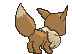
Turn one decides a lot of games. Here's how to play it.
Step 1: Do you have a Basic Pokémon?
If not, you mulligan — show your hand, shuffle it back, draw 7 more. Your dad draws 1 extra card. It's just a do-over.
Your Basics are Eevee, Eevee ex, and Hoothoot — 10 of them in 60 cards. You'll mulligan a bit less often than with your old deck.
Step 2: What do you play?
Your hand has…
Do this
Eevee + Flareon ex
Play Eevee Active, evolve immediately. Best possible start.
Buddy-Buddy Poffin
Play it. It's free. Grab an Eevee and a Hoothoot.
Eevee ex, no plain Eevee
Play it Active. It can't evolve this turn, but 200 HP holds the spot fine.
Hoothoot but no Eevee
Bench the Hoothoot, play Ultra Ball or Lillie's to dig for an Eevee.
All 6 Prizes still out
Lillie's Determination draws 8 instead of 6. Do it.
Crispin
Good turn-one Supporter if you don't need Lillie's. Free Energy attachment.
Sparkling Crystal
Attach it to your Flareon ex right away.
Step 3: Attach your Energy
Fire, onto whatever is attacking soonest. Usually the Active Flareon ex.
Step 4: Remember the turn-one rules
If you went first, you cannot attack. Set up instead.
Boosted Evolutiondoes work on turn one. That's the whole point of it.
There is no Rare Candy in this deck, so none of that turn-one Candy trouble exists any more.
7. Beating Dad's Gengar Gang
Know the other side and you'll see plays coming.
His deck is all Darkness Pokémon. Nothing in it is Water, so your Flareon ex's Water Weakness never comes up. Nothing in it is Fighting, so your Eevee ex's Fighting Weakness never comes up either.
That's a really good start.
The one number to remember
130 knocks out everything he owns.
His Pokémon
HP
Burning Charge does
Koffing
60
KO
Gastly
70
KO
Haunter
100
KO
Weezing
130
KO, exactly
Gengar
130
KO, exactly
No set-up. No coin flips. No Leons in the discard pile. You attack, something dies.
Weezing — his early attacker (130 HP)
It's a two-turn combo:
Turn A:Pervasive Gas — 30 damage, and your Active Pokémon is now Confused.
Turn B:Crazy Blast — 170 damage, but only if that same Weezing used Pervasive Gas last turn.
170 does not knock out a Flareon ex. 270 HP minus 170 is 100 left. In your old deck, 170 was exactly your Charizard's HP and Weezing was terrifying. Now it isn't.
The Confusion is the real threat, not the damage. A Confused Flareon ex has to flip a coin to attack. Tails means no damage, 30 to itself, and your turn is over. That's a turn where you took zero Prizes and he got a free one.
How to fight it:Switch. Leaving the Active Spot clears Confusion instantly and costs no Energy. If you're Confused and you don't have a Switch, Noctowl can go and get one.
Gengar — his closer (130 HP)
Mind Jack costs one Energy and does 10 damage, plus 30 for every Pokémon on YOUR Bench.
Your Bench
Mind Jack does
Does it KO your Active Flareon ex?
2
70
No
3
100
No
4
130
No
5
160
No — 270 HP
Read that last column again. Even with a full Bench, Gengar cannot knock out a Flareon ex in one hit. In your old deck a big Bench was dangerous. Here it mostly isn't.
But it kills everything else you own. 130 knocks out a Noctowl. 70 knocks out a Hoothoot. So the rule is simple: keep a Flareon ex in the Active Spot. Never leave a Hoothoot or a Noctowl out front when a Gengar is ready.
Infinite Shadow: when his Gengar is knocked out, the card goes back to his hand instead of the discard pile. You still take your Prize card. Never hesitate to knock out a Gengar.
His answer to Tera is Boss's Orders
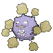
This is the most important thing in this whole section.
A Flareon ex or Eevee ex on your Bench cannot be attacked. He knows that. So his plan is Boss's Orders — it drags one of your Benched Pokémon into the Active Spot, where Tera stops working.
And both of those are worth 2 Prize cards. Boss's Orders is how he turns your safest Pokémon into his best target.
So a hurt Flareon ex on your Bench is safe, but it is not safe forever.
If you have a Flareon ex at 40 HP hiding on the Bench, assume he will drag it out the moment he can.
The answer is to have a second healthy Flareon ex and a Switch in hand, so you can drag it right back.
Or knock him out first. If he has no Pokémon that can attack, Boss's Orders doesn't help him.
His annoying cards
Card
What it does
What you do
Dark Bell
Confuses your Active Pokémon, for free, as an Item
Keep a Switch around. He can play several in a turn.
Risky Ruins
20 damage to each Basic you bench
You have no Stadium to replace it, so just accept it. It hits Eevee and Hoothoot, never Flareon ex.
Punk Helmet
You take 40 damage for attacking the Pokémon wearing it
Flareon ex has 270 HP. Take the 40 and keep attacking.
Infinite Shadow
His knocked-out Gengar goes back to his hand
You still get the Prize card. Knock it out anyway.
Boss's Orders
Drags your benched Pokémon into the Active Spot
The one card that beats Tera. Plan for it.
Haunter — Haunt
Places 3 damage counters (30) on your Active
Small. Ignore it and keep attacking.
8. Mistakes That Will Cost You The Game
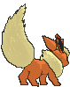
The specific traps in this deck. Read this one twice.
Playing Eevee to the Bench and expecting to evolve it.Boosted Evolution only works in the Active Spot. This is the number one mistake with this deck.
Using Buddy-Buddy Poffin to find the Eevee you want to evolve now. Poffin puts them on the Bench. Same mistake, one step earlier.
Trying to use Carnelian or Coruscating Quartz. Both cost [L] Lightning and your deck has none. They are not options.
Leaving a hurt Flareon ex in the Active Spot. Below 170 HP a Weezing finishes it. That's 2 Prize cards you handed over for free. Switch it out.
Leaving a Hoothoot or Noctowl Active when his Gengar is ready.Mind Jack eats them. Keep a Flareon ex out front.
Evolving all three Noctowl at once. You only get 3 Jewel Seeker uses in the whole game. Save one for when you actually need a specific card.
Forgetting Jewel Seeker is free. Evolve before you play your Supporter, so you know what you still need.
Playing Lillie's Determination with a good hand. It shuffles everything away. Play your Items first.
Playing Lillie's before your Ultra Balls. You just shuffled away the cards you were going to pay the Ball with.
Playing Gwynn holding only ex cards. Gwynn can only discard Pokémon without a Rule Box. Flareon ex and Eevee ex both have one, so that Gwynn draws you zero cards.
Attaching Sparkling Crystal to a Noctowl. It only goes on a Tera Pokémon. Flareon ex and Eevee ex are your only two.
Playing two Supporters in one turn. Not allowed. One per turn.
Attacking, then trying to do other stuff.Attacking ends your turn. Do everything else first.
9. The Turn Checklist
Stick to this order and you'll stop forgetting things.
1. DRAW your card.
2. ITEMS - Poffin, Ultra Ball, Switch, Night Stretcher.
3. ENERGY - attach 1 from your hand.
4. EVOLVE - Eevee -> Flareon ex, Hoothoot -> Noctowl.
JEWEL SEEKER fires here. Take your 2 Trainers.
5. TOOL - attach Sparkling Crystal if you have it.
6. SUPPORTER - only ONE. Lillie's? Crispin? Boss's Orders?
7. ATTACK - Burning Charge. This ENDS your turn.
Why this order? Because every step tells you something about the next one. Evolving a Noctowl at step 4 might hand you the Boss's Orders you play at step 6. If you play the Supporter first, you'll pick the wrong one.
Step 4 is where this deck is different from your old one. In Fire Force, Battle Sense was the free thing you always forgot. Here it's Jewel Seeker. Same habit, different card: do the free thing before the thing you only get once.
The single most common mistake in this whole game is attacking too early in your turn. Attack last. Always.
 Fox's Flareon Engine
Fox's Flareon Engine 


![Boss's Orders [Ghetsis]](./assets/654453_bosss-orders-ghetsis.jpg)